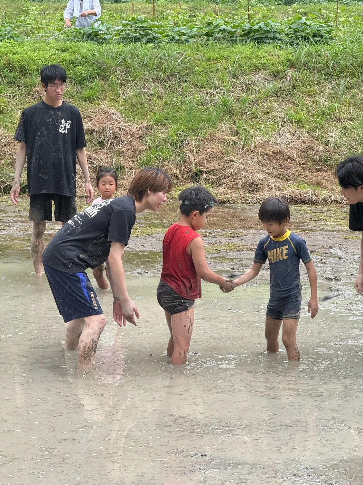
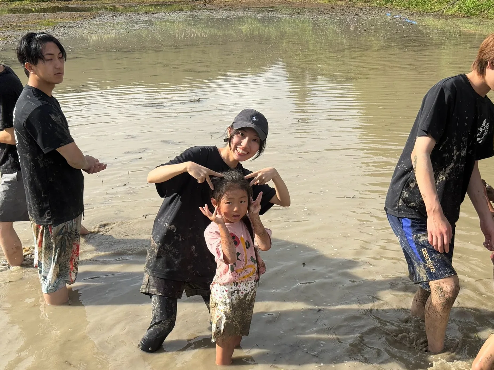
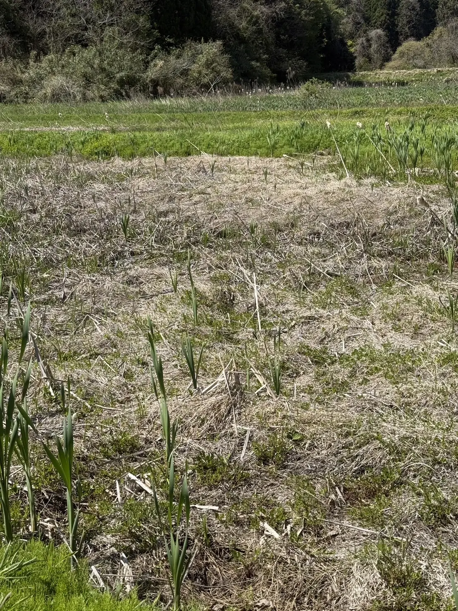

競技参加者、見学者、運営を含む総来場。
2026.9.20 / SUZU, ISHIKAWA
この田んぼから、
何ができるだろう。
使われなくなっていた珠洲・洲巻の田んぼに、人が集まる理由をつくる。NOTO Re:Bloomは、楽しさを入口に、土地を知り、地域の方と関わるきっかけをつくる学生プロジェクトです。
泥ん子運動会2026は終了しました。開催レポートを公開しています。

使われなくなった田んぼが、もう一度、人の集まる場所になる。
EVENT AT A GLANCE
9月20日、
田んぼに人が集まりました。
企画書の中にあった「楽しさを入口に、能登へ関わる理由をつくる」という考えを、実際の一日として形にしました。
赤組・白組に分かれて泥競技に参加。
泥の中で楽しめる競技を実施。
イベントの記憶を持ち帰るレンゲカップ。




WHY WE STARTED
全部を直すことはできない。
でも、来るきっかけはつくれる。
農地や水路の本格的な復旧は、農業者や行政、専門の方々が進めています。私たちはその代わりをするのではなく、まず土地を知る人、能登を訪れる人、地域の方と話す人を増やすところから始めました。
土地を知る実際の田んぼに立ち、現地の状態を見る。
来る理由をつくる「楽しそう」を能登へ行く入口にする。
地域と話す同じ場所で過ごす中から会話を生む。
次へ残す一日の経験とつながりを次の活動へ。
OUR APPROACH
泥ん子運動会は、
きっかけでした。
遊ぶことから始まり、土地を知り、人と話し、また関わりたいと思える。その小さな循環をつくることが、NOTO Re:Bloomの役割だと考えています。
私たちの思いを見る
WHAT REMAINS
一日で終わらせず、
次の関わりへ。
イベントの成果を人数だけで見るのではなく、土地を知る人が増え、地域・学生・企業や団体とのつながりが残ったことを次へつなげます。
土地に人が入る
使われなくなっていた農地を、人が集まる場所として使いました。
地域と出会う
参加者と地域の方が、同じ場所で自然に言葉を交わしました。
能登へ来る理由をつくる
義務感だけではない「楽しそう」という入口をつくりました。
次の土地へ持っていく
今回の経験とつながりを、次の活動へ引き継ぎます。
OUR JOURNEY
現地に行くところから、
始まりました。
土地を探し、地域の方と話し、支援を集め、開催する。泥臭いプロセスそのものが、このプロジェクトの一部です。
能登の課題と向き合う
使われなくなった農地に目を向け、現地を歩きました。
洲巻の田んぼへ
地域の方との調整を重ね、約1,000㎡の田んぼをお借りしました。
9月20日に開催
子どもから大人まで集まり、5つの泥競技を実施しました。
次の活動へ
一度きりで終わらせず、別の土地での次の取り組みを考えています。
ともに取り組むパートナー
協賛・協力について →9月20日の一日を、
写真と記録で残しています。
泥ん子運動会2026の開催結果を、当日の写真とともにご覧いただけます。